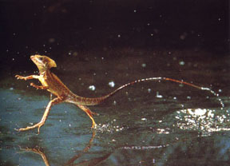

The
species - Basiliscus basiliscus. Nicknamed
"Jesus
Lizard"
because they can flee from a predator by running on
top of water.
They have relatively large
hind feet with flaps of skin between each
toe that enables them to run thirty
to forty feet without sinking.